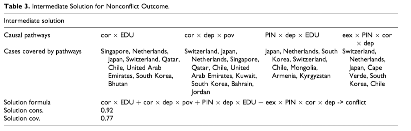

收录于合集

编者按
本文基于模糊集定性比较分析(fsQCA)方法，以31个水资源与耕地资源匮乏的国家作为案例，分析了在何种政治、经济与社会条件下，资源匮乏国家会爆发武装冲突。定性比较分析方法试图整合定性研究（以案例为导向）与定量研究（以变量为导向）的优势，它关注条件及其组合，强调多重并发因果及因果关系的非对称性。该文可以帮助我们理解fsQCA方法的原理、操作、优势与劣势。
作品简介
【作者】 Judith M. Bretthauer, 阿姆斯特丹自由大学政治学博士。
【编译】 李 源（国政学人编译员，吉林大学公共外交学院）
【校对】 蔡 宇
【审核】 贺凡熙
【排版】 高 鹏
【来源】 Bretthauer, J. M. (2015) Conditions for Peace and Conflict: Applying a Fuzzy-Set Qualitative Comparative Analysis to Cases of Resource Scarcity. Journal of Conflict Resolution , 59(4), 593-616.
期刊简介
Journal of Conflict Resolution《冲突解决杂志》是一本融合了社会科学理论和人类冲突研究的跨学科杂志。JCR着眼于国家之间和国家内部的冲突，但也探索各种可能有助于理解战争与和平问题的群体间和人际冲突。根据2018年Journal Citation Reports显示，其影响因子为2.471。
**资源匮乏国家冲突与和平的条件：基于模糊集定性比较分析的解释
**
Conditions for Peace and Conflict: Applying a Fuzzy-Set Qualitative Comparative Analysis to Cases of Resource Scarcity
内容提要
本文基于模糊集定性比较分析(fsQCA)方法，以31个水资源与耕地资源匮乏的国家作为案例，分析了在何种政治、经济与社会条件下，资源匮乏国家会爆发武装冲突。基于现有案例研究的理论观点，作者检验了三个假设：弱国假设，家庭经济状况假设与人的创造力假设，具体包括六个条件：政治制度质量、政治腐败、种族排斥、贫穷、对农业的依赖程度与高等教育人口比例。在对“存在冲突”结果与“不存在冲突”结果的必要条件与充分条件进行分析后，作者揭示了导致冲突的两条因果路径与不存在冲突的四条因果路径。作者强调，本文的分析印证了家庭经济状况假设与人的创造力水平假设的重要性，揭示了在现有资源匮乏与武装冲突的研究中未受到充分重视的两个因素：对农业的高度依赖与高等教育人口匮乏。虽然fsQCA对解释这一问题具有重要价值，但该方法也存在明显的局限。
文章导读
01
资源匮乏与武装冲突
对既有关注资源匮乏与武装冲突的文献进行回顾与总结后，作者指出，本文并不关注资源匮乏是否会导致冲突这一问题， 而是试图解释在何种社会、经济与政治条件下，资源匮乏国家会爆发冲突。 因此，本文的分析对象限于那些资源匮乏的国家，资源匮乏是一个范围条件(scope condition)而不是一个自变量。
02
社会、经济与政治条件
关注资源匮乏的理论家提出的大部分因果机制都是间接的，关注不同的社会、政治或经济中间因素。基于既有案例研究中解释资源匮乏如何导致武装冲突的理论观点，作者检验了三个假设：
弱国假设： 腐败程度高、政治制度薄弱且存在种族排斥的国家会经历武装冲突。
家庭经济状况假设： 高度贫穷、对农业依赖程度高，或两者共存的国家会经历武装冲突。
创造力假设： 经历武装冲突的国家，创造力水平低。作者指出，人的创造力提供了以非暴力方式解决由资源匮乏导致的问题的可能性。它是一种缓和冲突的手段，而非冲突的诱发因素。虽然创造力的缺乏不会直接导致冲突，但经历冲突的国家往往缺乏作为缓和因素的创造力。
03
方法与案例选择
本文以模糊集定性比较分析（fsQCA）为研究方法，选取了31个水资源与耕地资源匮乏的国家作为案例。 依据联合国粮农组织发布的《世界土壤资源状况》报告，作者将人均等效潜在耕地面积低于0.1公顷的国家视为耕地资源匮乏国家。基于联合国粮农组织全球水信息系统主要国家数据库中每年可再生水资源总量与人口数据，以及1990至2010年间的平均值，作者将人均每年用水量低于1000立方米的国家视为水资源匮乏国家。
作者将条件与结果校准为0至1之间的模糊集隶属得分(membership scores)，编码为0的案例完全不隶属于某集合，编码为1的案例完全隶属于某集合，低于0.5的案例偏不隶属于某集合，高于0.5的案例偏隶属于某集合，.5处于最大模糊性，指代其既非完全隶属也非完全不隶属。
作者 以战斗总死亡测量研究的结果 ，将分界点设为1000（完全隶属）、25（交叉点）与0（完全不隶属），这表示：当战斗总死亡达到1000时，该案例被视为“爆发内战的武装冲突”；当战斗总死亡达到25时，该案例被视为“爆发武装冲突”；当总死亡为0时，其被视为“不存在武装冲突”。
表1 水资源、土地匮乏与冲突指数的案例选择
表1水资源、土地匮乏与冲突指数的案例选择（续表）
04
条件
本文的三个假设包含六个条件：
政治制度质量(Quality of Political Institutions ,PIN)
作者通过 自由之家的公民自由指数 测定政治制度质量。自由之家指数将1至2.5得分的国家划为“自由”，将3至5得分的国家划为“部分自由”，将5.5至7得分的国家划为“不自由”。依据这一指标，作者设定得分达到5.5的案例完全隶属于“弱国”集合，得分低于2.5的案例完全不隶属于“弱国”集合，4.1得分为交叉点。
政治腐败(Political Corruption ,COR)
世界银行的腐败控制指数 将国家得分设为-2.5至2.5之间，得分越高，腐败程度越低。基于这一指数，作者设定0为交叉点，得分小于或等于-1.0的国家完全隶属于“腐败国家”集合，得分达到1.0的国家完全不隶属于“腐败国家”集合。
种族排斥(Ethnic Exclusion ,EEX)
依据安德烈亚斯·维默(Andreas Wimmer)等学者的研究，作者 将被排除在权力之外的人口比例操作化为种族排斥， 设定比例达到20%的国家完全隶属于“存在种族排斥”集合，低于5%的国家偏隶属于“存在种族排斥”集合，0%的国家完全不隶属于“存在种族排斥”集合，这产生了13个不存在种族排斥的国家。
贫穷(Poverty ,POV)
根据 世界银行的贫困人口比例 ， 样本中有8个国家高于每日1.25美元的贫困线，作者设定交叉点为阿尔及利亚（7.6%）与亚美尼亚（11.3%）之间的10%，比例高于30%的国家完全隶属于“高度贫困”集合。
对农业的依赖程度(Dependence on Agriculture ,DEP)
作者 以农业人口占总人口的比例测量对农业的依赖程度， 依据尼科斯·亚历山德拉托斯(Nikos Alexandratos)对高度依赖农业的定义（50%至80%的人口依赖农业作为主要的收入来源），作者设定比例达50%的国家偏隶属于“高度依赖农业”集合，比例达80%的国家完全隶属于“高度依赖农业”集合，比例低于5%的国家完全不隶属于该集合。
高等教育(Tertiary Education ,EDU)
相比于其他测量指标，作者认为 持有大学学位的人口比例可以更好地反映一国的创造力水平。 利用罗伯特·巴罗(Robert J. Barro)与李钟和(Lee Jong- Wha)两位学者关于教育程度的数据与1990年至2010年25岁以上拥有高等教育学位的人口平均百分比，作者设定达到13%的国家完全隶属于“高等教育人口比例高”集合，低于1%的国家完全不隶属于“高等教育人口比例高”集合，设定约旦（6.6%）与蒙古（7.9%）之间的7%为交叉点。
05
分析与结果
定性比较分析并未假定因果关系的对称性。本部分分析了“存在冲突”结果与“不存在冲突”结果的必要条件、充分条件与因果路径。其中，当吻合度(consistency)达到0.9时，该条件被视为必要条件。
“存在冲突”结果
“高等教育人口比例低”的吻合度达到了.89，只有该条件可勉强被视为“存在冲突”结果的必要条件。 这意味着除下图左上角的乌兹别克斯坦(UZB)外，经历武装冲突的国家的高等教育人口比例都很低。该结果支持了创造力假设，即：经历武装冲突的国家，创造力水平低。
图l：高等教育人口比例低是“存在冲突”结果的必要条件
其次，需要分析冲突结果的充分条件。中间解(intermediate solution)的吻合度与覆盖度(coverage)如表2所示。结合必要条件与充分条件， 中间解揭示了导致冲突的两条因果路径。 两条路径都包含高等教育人口比例低、高度依赖农业与高度贫困三个条件。第一条路径将这三个条件与高度腐败相结合，第二条路径则将这三个条件与政治制度质量差相结合。这支持了家庭经济状况假设与人的创造力假设。两条路径由于包含了三个共同条件，因此覆盖了许多相同的案例。也门、巴基斯坦与尼泊尔三个案例只覆盖了第一条路径，而吉布提则只覆盖了第二条路径（译者注：这里很明显与下表所呈现的有出入，译者们认为可能是原作者的个人失误，供大家探讨）。
表2：“存在冲突”结果的中间解
“不存在冲突”结果
“对农业依赖程度低”的吻合度达到了.89，只有该条件可勉强被视为“不存在冲突”结果的必要条件。 需要特别注意的是左上角的不丹(BTN)，在该案例中，“和平”结果与“高度依赖农业”相联系，作者指出，虽然不丹在研究中并未被划为发生冲突国家，但它在20世纪90年代初确实经历了大规模的种族冲突。

图2：对农业依赖程度低是“不存在冲突”结果的必要条件
如下图所示，对“不存在冲突”结果的充分条件分析提供了四种因果路径：第一条路径是“腐败程度低高等教育人口比例高”；第二条路径是“腐败程度低对农业依赖程度低贫困程度低”；第三条路径是“政治制度质量高高等教育人口比例高对农业依赖程度低”；第四条路径是“种族排斥程度低政治制度质量高腐败程度低对农业依赖程度低”。不同条件组合导致了共同的“不发生冲突”结果，有一些案例覆盖了所有路径，例如新西兰、日本、瑞士等自由民主国家，卡塔尔、沙特、科威特等威权国家，蒙古、亚美尼亚等人均收入低的国家。

表3 ：“不存在冲突”结果的中间解
06
讨论
本文的分析 揭示了在现有资源匮乏与武装冲突的研究中未受到充分重视的两个因素： 作为“不存在冲突”结果必要条件的对农业依赖程度低，与作为“存在冲突”结果必要条件的高等教育人口匮乏。
同时，作者指出，定性比较分析（Qualitative Comparative Analysis, QCA）方法关注导致同一结果的多重路径，强调并发因果与非对称因果关系。多重路径假设更有助于检验资源匮乏与武装冲突之间的间接联系。并发因果为探究不同条件的组合提供了可能。同时，统计分析与案例研究更多地关注对“存在冲突”结果，而非“不存在冲突”结果做出解释，而因果关系的非对称性则让我们分别分析两种结果，从而增强了结果的普遍性。因此，本文的分析表明，QCA方法能够增进现有的冲突研究。但该方法也存在明显的局限，随着新条件的增加，潜在条件组合的数量也在呈指数增长。因此，可能会忽略或者无法囊括一些相关条件。
07
结论
组态比较分析方法(configurational comparative methods)（例如，fsQCA）的引入为学者们把握基于因果复杂性(causal complexity)逻辑的理论观点提供了可能，资源匮乏与武装冲突的联系便是其中议题之一，实证结果对这一问题目前并无定论。作者认为，基于fsQCA方法，考虑资源匮乏国家的政治、社会与经济条件有助于化解目前的分歧。基于31个资源匮乏国家的案例（15个国家在1990年至2010年间经历了冲突），作者检验了三个假设：弱国、家庭经济状况与人的创造力，发现大部分的案例印证了第二与第三个假设。 本文的分析表明，QCA方法的因果复杂性假设能够增进对冲突问题的研究。通过分别分析“存在冲突”结果与“不存在冲突”结果，以及考虑同一结果的多重路径，该方法能够对其他方法作出补充。
附录网址：jcr.sagepub.com/supplemental

添加 “国小政”微信，获取最新资讯


好好学习，天天“在看”
国政学人
支持学术公益与知识传播
微信扫一扫赞赏作者 __赞赏
已喜欢，对作者说句悄悄话
取消 __
发送给作者
发送
最多40字，当前共字
上一页 1/3 下一页
长按二维码向我转账
支持学术公益与知识传播
受苹果公司新规定影响，微信 iOS 版的赞赏功能被关闭，可通过二维码转账支持公众号。